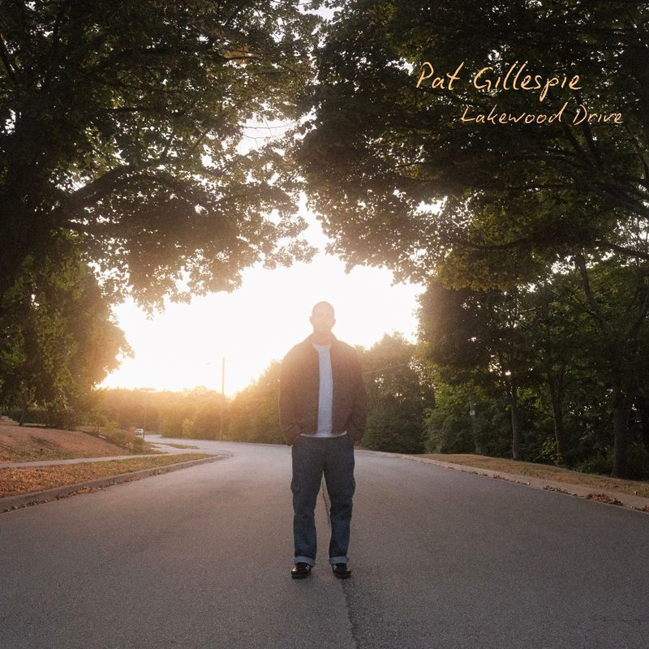

Lyrics
Lakewood Drive
Lakewood Drive EP · 2025 · Words and music by Pat Gillespie

Spotify · Apple Music · YouTube Music
Verse 1
That day in autumn
There was still green in the leaves
Time felt unending
When you told me you loved me
You had that spark in your eye
When you saw me you smiled
When I pulled you in close
You held on for a while
We'd talk and talk how we could
Waste our time
Verse 2
That day in autumn
It'd been weeks since we met
I was making more time
I quit smoking cigarettes
Because all I could see
Is we were better that way
The more I realize it fades
The more I need you to stay
As time runs from me
I'm so grateful you stay
Verse 3
That day in autumn
Down Lakewood Drive
You knew I had fallen
How you became my life
It's the way I would speak
When I was talking to you
Or the grin in my cheek
When you came into view
Pre-Chorus
You know life gets so simple
When it's just you and me
I've got nowhere to go
I've got nothing to be
Chorus
If life could stay this way
I'll love you completely
I can tell you're the same
I can tell that you need me
If life could stay this way
I'll love you completely
I can tell you're the same
I can tell that you need me
Yeah, how you need me, yeah
If life could stay this way
I'll love you completely
I can tell you're the same
I can tell that you need me
Outro
That day in autumn
Where we both say I do
Just how we dreamt it
How we always knew